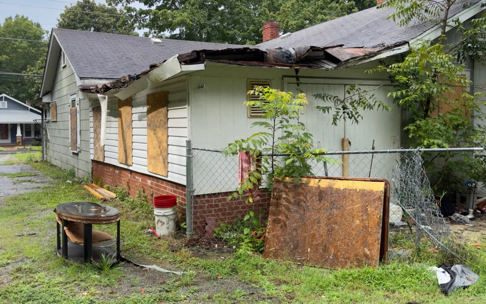

Local Kernersville NC home buyer
Sell your Kernersville house fast without fixing it first.
If you need to sell a house fast in Kernersville, America Home Buyers can review it in its current condition. Repairs, belongings, tenants, vacancy, and cleanout needs can stay part of the conversation instead of becoming work you must finish before asking for an offer.
Compare speed with the likely net from listing.
A direct as-is sale can reduce repair decisions, repeated showings, inspection negotiations, and buyer-financing uncertainty. A prepared traditional listing may produce a higher price. Compare likely net proceeds, work, timing, and certainty before choosing.
- Repair-heavy or dated houses.
- Inherited and estate properties.
- Rental houses with tenant or turnover issues.
- Vacant properties needing cleanout.
See the North Carolina as-is selling guide for the main tradeoffs.

Kernersville and the Triad
A property-specific review, not a one-size-fits-all promise.
We look at location, nearby sales, property type, condition, occupancy, access, repairs, resale costs, and risk. Ask what assumptions drive the number, what due diligence remains, and what could change after a walkthrough.
Useful next reads: how offers are calculated and the home buyer checklist.
Share the address, known repairs, occupancy, access details, and your preferred timeline. You do not need contractor estimates before calling.
Request a Kernersville property review.
Phone and street address are required. Submitting the form does not obligate you to sell.
Can I sell my Kernersville house as-is without repairing it?
Yes. America Home Buyers can review the current condition, including needed repairs, cleanout, occupancy, and access, before explaining a written offer.
How fast can a Kernersville house sale close?
The realistic timing depends on title work, access, payoff information, and the written agreement. We discuss the preferred timeline after reviewing the property.
Can I leave belongings in the house?
Tell us what may need to remain so cleanout can be considered during the property review and addressed in the written agreement.
Is requesting a Kernersville offer binding?
No. Requesting a property review does not require you to sell. Any sale requires mutually accepted written terms.
Match the closing plan to your actual move
When selling a Kernersville property, explain whether you need time to move, remove belongings or coordinate another purchase. Speed is useful only when the written agreement and possession date fit your situation. Tell us about any access restrictions before planning a walkthrough.
Separate your preferred date from a fixed deadline. Ask how title work, inspections or an occupied property could change the schedule, and compare the proposed plan with what a traditional listing would require.
Explore inherited property, houses needing repairs, tenant-occupied homes or liens and back taxes. Request a property review.
South Main Street, NC 66 and Old Winston Road
Kernersville’s development ordinance identifies highway-corridor overlay areas, including portions of Old Winston Road and Pineview Drive. A road name alone does not establish which rules apply to a parcel. If an offer assumes a new entrance, expansion or a different use, confirm the relevant zoning and access requirements first. An as-is house sale and a redevelopment proposal can involve different assumptions.
Official local resource: Kernersville development ordinance. Reviewed November 10, 2026.